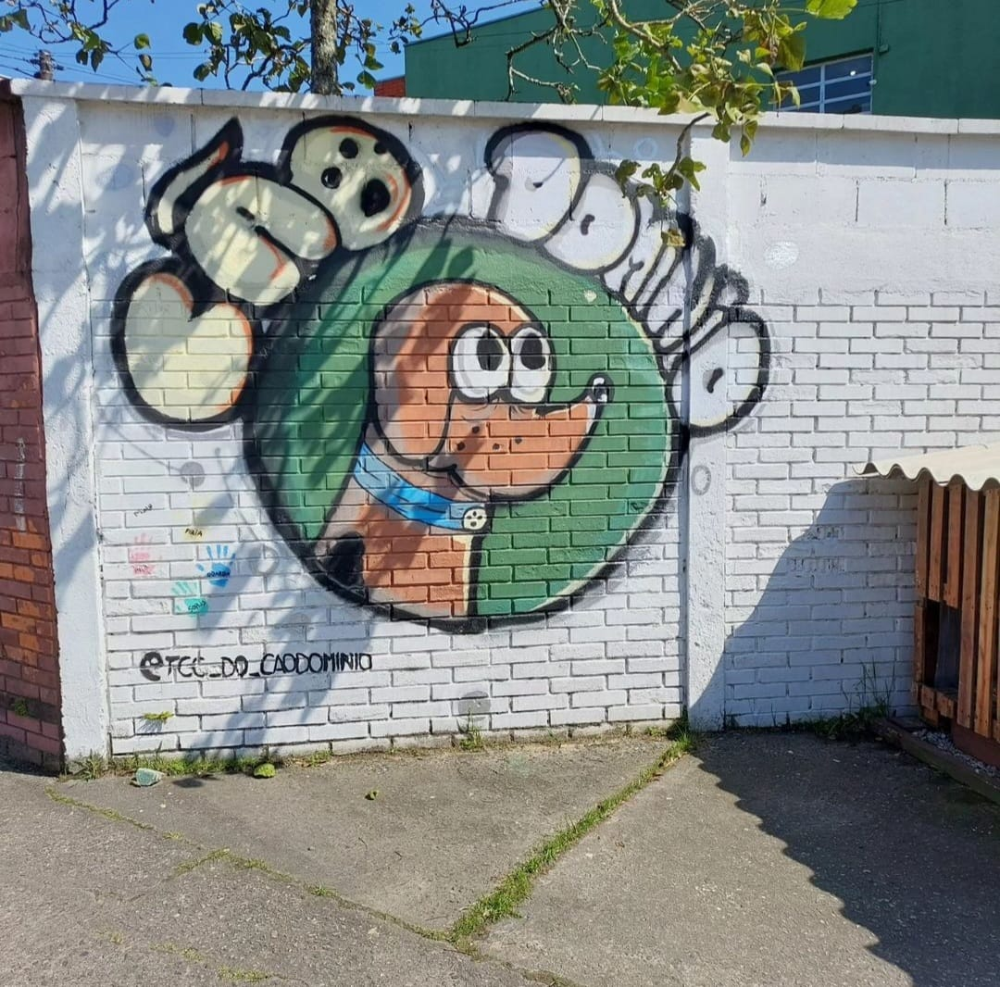
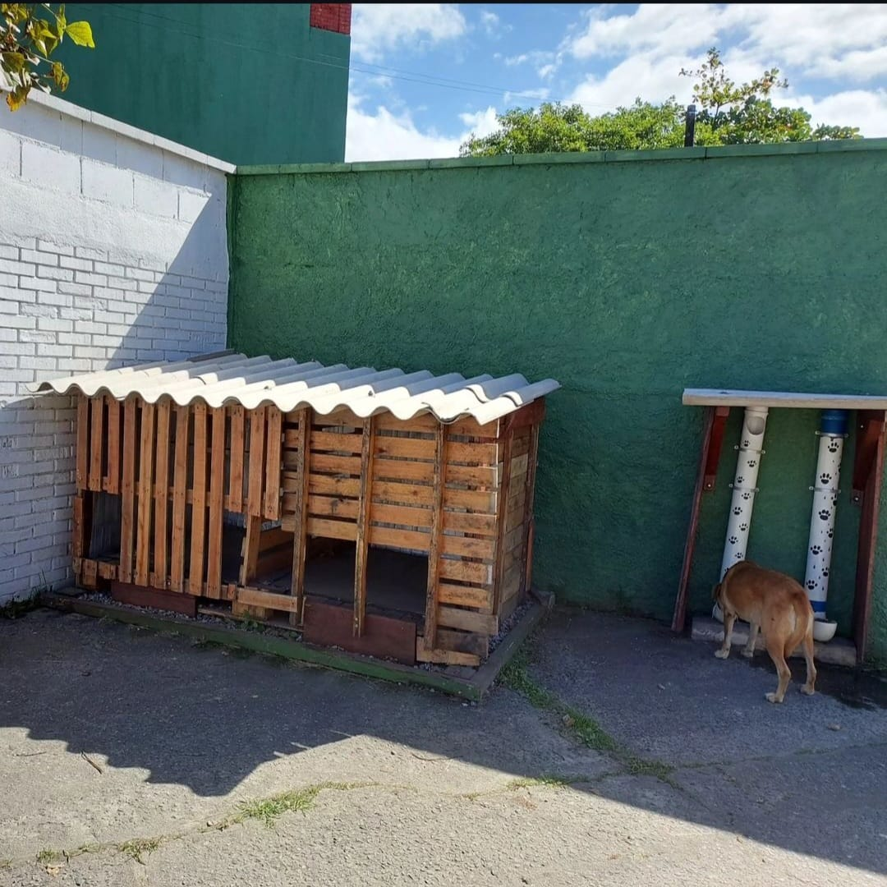
Cãodominio
• Quem criou?
O projeto foi criado a partir da ideia de alunos da etec para um TCC a partir do momento em que foi percebido que haviam vários cães de rua que transitavam durante o dia quente.
• Como funciona?
É doado materiais como latinhas, lacres, tampinhas, etc. Para que eles pudessem ser vendidos e, assim, arrecadasse dinheiro para a ração que vai ser distribuída para os animais de rua. Arrecadar dinheiro para a ração por meio de materiais se revelou muito mais acessível e barato do que apenas comprar a ração.
• Qual o objetivo?
O objetivo do cão domínio é de encontrar um dono para os animais de ruas e a castração desses animais, em geral, melhorar a qualidade de vida do animal. O cão domínio oferece alimentação para esses animais em situação de vulnerabilidade para que assim eles sejam enxergados e quem sabe adotados também.
• Como podemos ajudar?
A melhor e mais acessível forma de ajudar as pessoas que trabalham com o cão domínio é a de doar tampinhas, lacres ou quaisquer outros materiais que eles possam vender para arrecadar dinheiro para a ração, ou adotar/procurar alguém que possa adotar os cachorros de rua. Você também pode ajudar de outras formas que são menos acessíveis, como doar dinheiro, casinhas, brinquedos de cachorro.
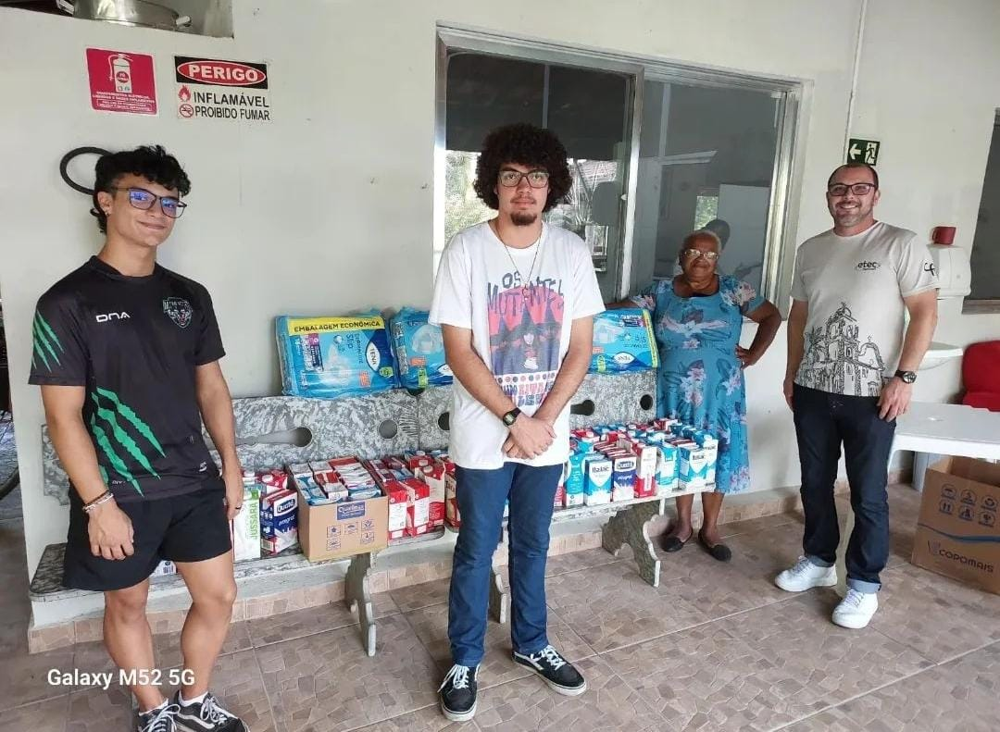
Arrecadação de leite
• Quem criou?
A direção da escola, porém ela é organizada juntamente com os alunos para se realizar a arrecadação.
• Como funciona?
No começo do ano, a escola pede que cada aluno doe se possível 1 caixa de leite ou leite em pó, assim, juntamente com o incentivo dos próprios alunos, se é arrecadado em torno de 200L de leite por coleta.
• Qual o objetivo?
Coletar leite, seja ele liquido ou em pó, para que ele seja posteriormente doado para um asilo e uma creche, porque foi observado que as pessoas desses lugares consomem bastante leite .
• Como podemos ajudar?
Doando qualquer quantidade de caixa de leite/saco de leite em pó e entregando na secretaria da escola no momento em que a coleta está acontecendo.
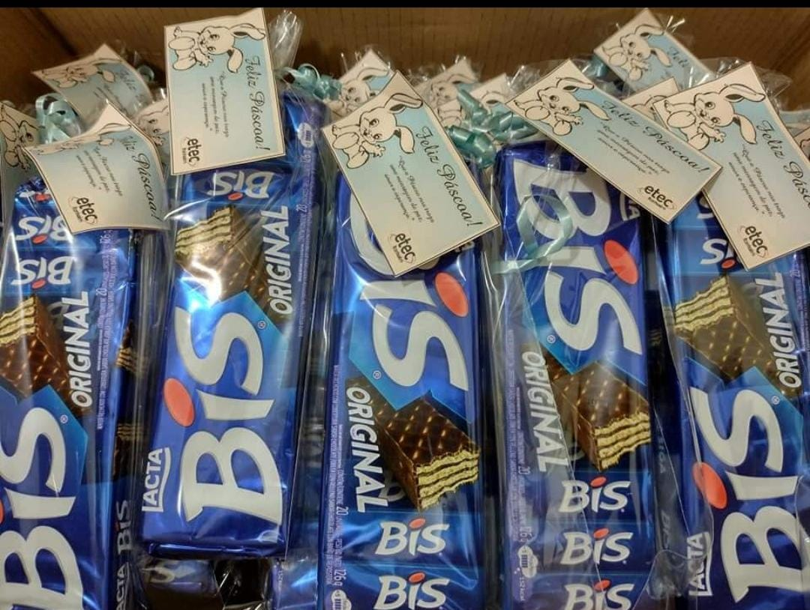
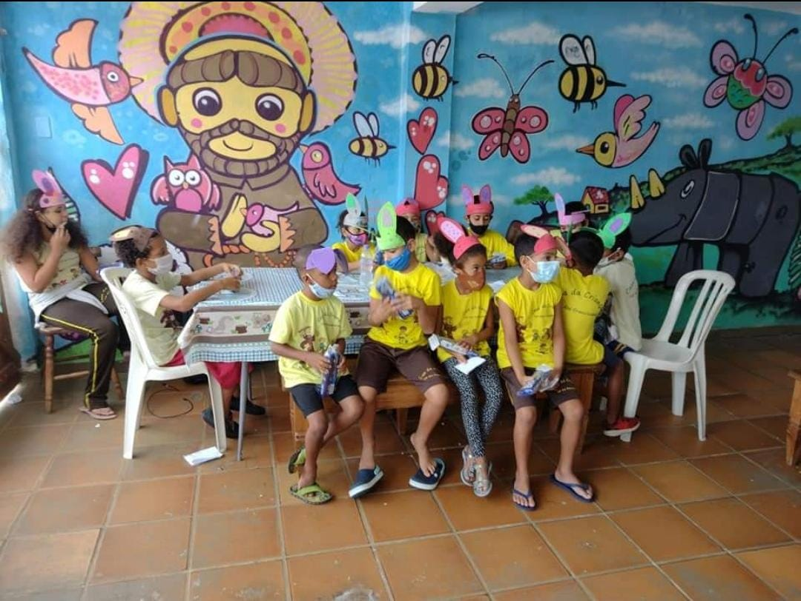
Páscoa
• Quem criou?
A própria direção da escola, e é organizada por meio de reuniões para acertar data e os horários para tornar o evento possível.
• Como funciona?
Algumas semanas antes da páscoa, a escola pede para que os alunos doem caixas de bis, sem limite para máximo de caixas. As caixas vão se acumulando até a semana da páscoa, onde elas são doadas para uma creche chamada Lar dos Franciscanos, porém, teve um ano em que a doação foi feita para o Asilo da nossa cidade.
• Qual o objetivo?
O objetivo é similar ao do Natal solidário, contudo, ao invés de serem doados brinquedos para as crianças, são doadas caixas de bis para elas e, ocasionalmente, para idosos também. Em geral, a páscoa solidária tem como objetivo apenas fazer um ato de caridade para crianças que não tem a oportunidade de ter um ovo de chocolate na páscoa.
• Como podemos ajudar?
Novamente, ajudando com a doação se possível. Doar pelo menos uma caixa de bis para que possam ser doados para a creche já faria uma grande diferença na páscoa das crianças.
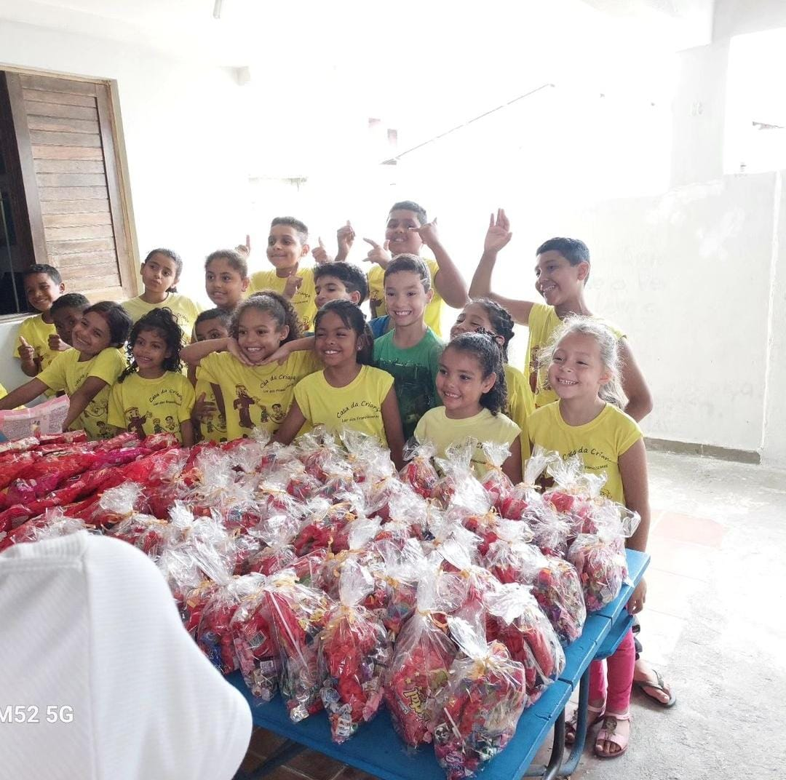
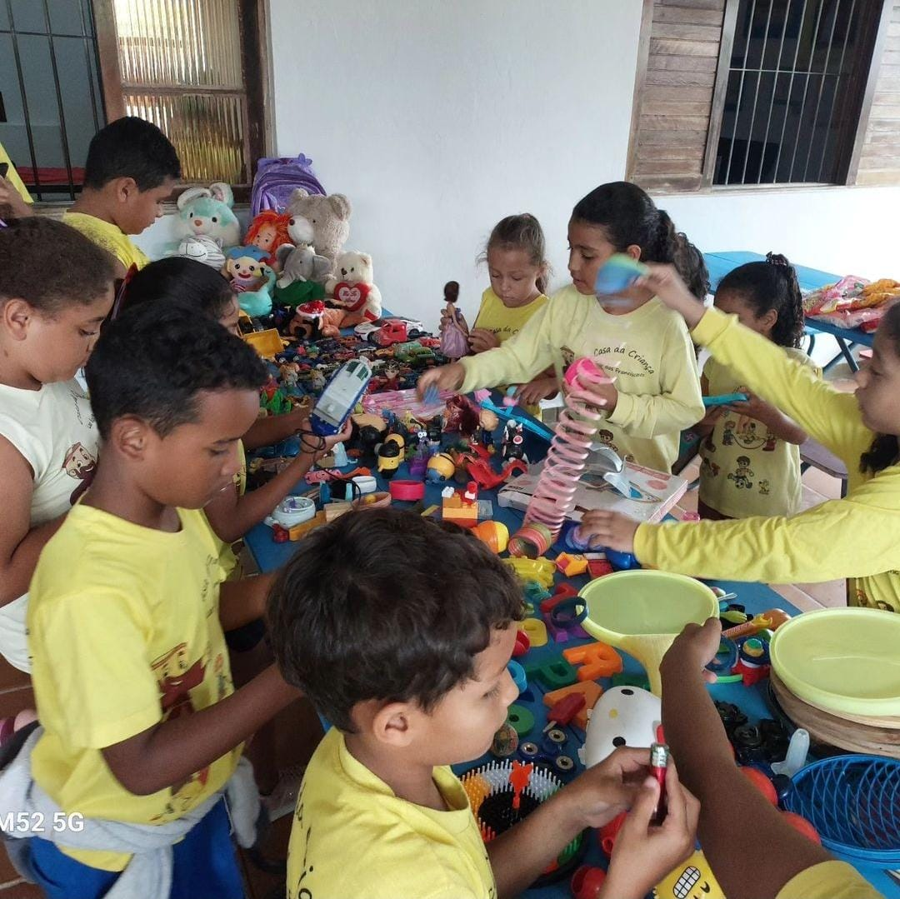
Dia das Crianças
• Quem criou?
Foi criado e é organizado pelo professor Júlio na escola.
• Como funciona?
A escola divulga e pede que os alunos doem para o evento diversos doces para que sejam montados saquinhos de doces que serão levados às crianças da creche Lar dos Franciscanos.
• Qual o objetivo?
É de dar um presentinho para as crianças desta creche que, por falta de condições, normalmente não ganham nada no dia das crianças, então, estes saquinho de doces compensam esta falta.
• Como podemos ajudar?
Doando doces, sejam eles balas, pirulitos, chocolates, etc., para que, assim, eles sejam doados para estas crianças.
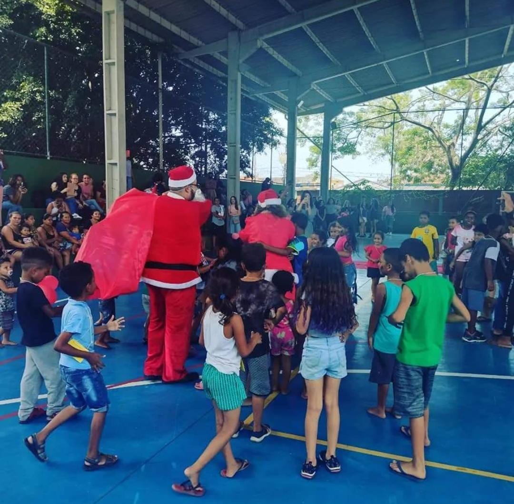
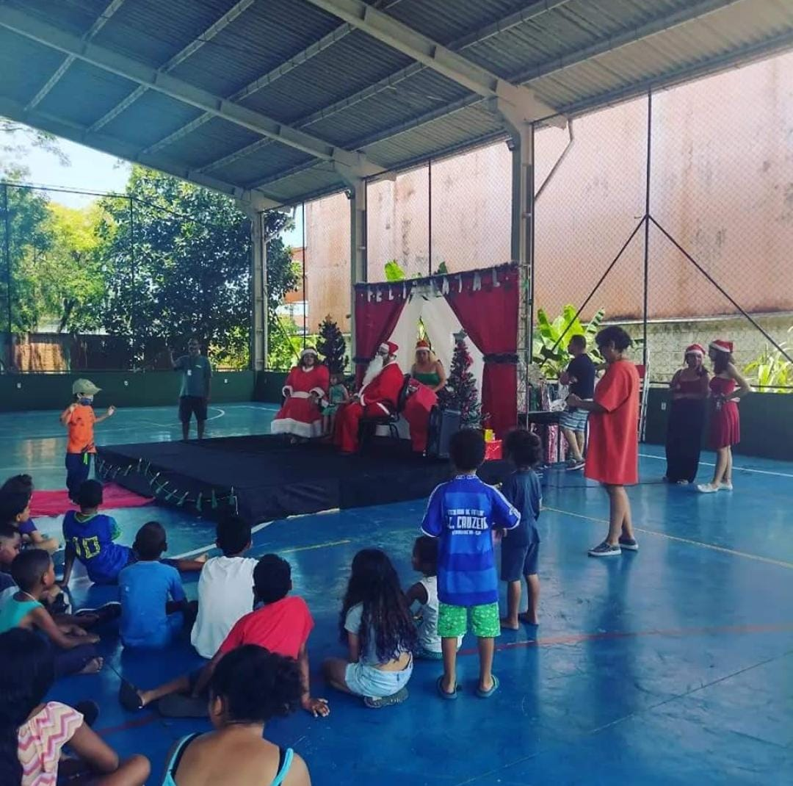
Natal
• Quem criou?
A própria direção da escola que criou e organiza o evento.
• Como funciona?
É gerado uma lista, se dá prioridade a crianças de 0-12 anos, aonde é pedido que seja doado algum brinquedo usado para que essas crianças possam brincar com eles. Na primeira semana de Dezembro, as doações são direcionadas até ao bairro Parque Vergara, aonde as crianças são levadas até a etec para receberem seus presentes.
• Qual o objetivo?
Dar a oportunidade á crianças carentes de brincar com diferentes brinquedos para, assim, poderem ter uma infância mais feliz e divertida.
• Como podemos ajudar?
Você pode ajudar doando brinquedos, sejam eles seus, dos seus filhos ou de outra pessoa da sua família, dos quais estejam parados na sua casa. Esses brinquedos podem até não ter mais utilidade para você, mas vai ter, e muita, utilidade para uma criança que teve poucos ou nenhum brinquedo na vida dela.
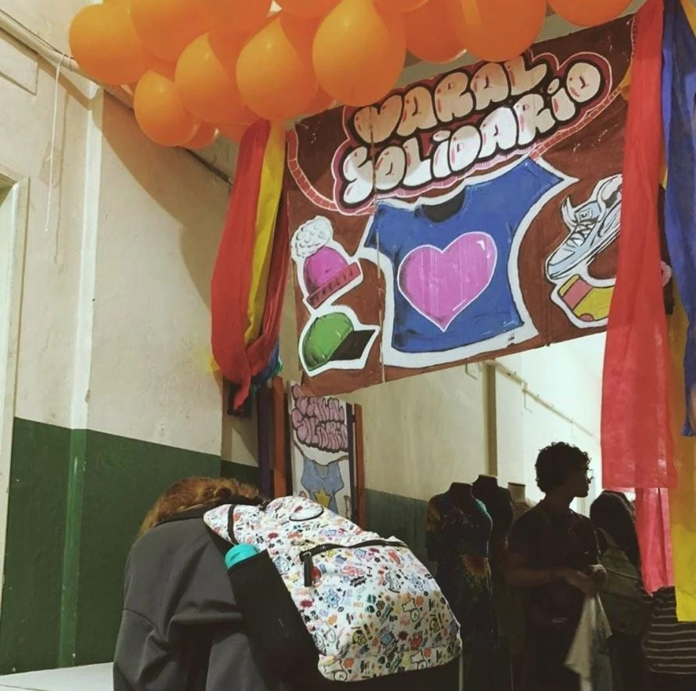
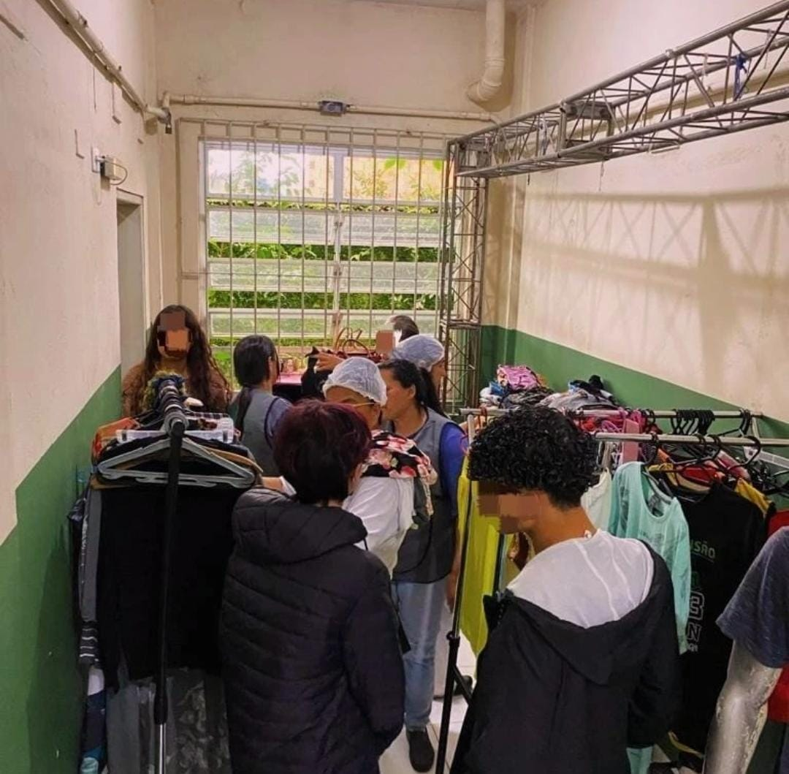
Varal Solidário
• Quem criou?
A professora Joelma junto de um grupo de alunos do Terceiro ano.
• Como funciona?
A cada 15 dias para os alunos da escola em período integral, acontece o varal solidário, e para o período noturno uma edição especial por mês.
• Qual objetivo?
Ajudar os membros da comunidade escolar que enfrentam dificuldades financeiras, diminuir a desigualdade na comunidade escolar, educar os alunos acerca da importância da solidariedade a contribuir para práticas sustentáveis.
• Como podemos ajudar?
Doando roupas, sejam elas blusas, calças, saias, etc., que você não usa mais ou que não caibam mais emvocê. Qualquer ajuda já significa muito, então se puder ajudar, ajude!